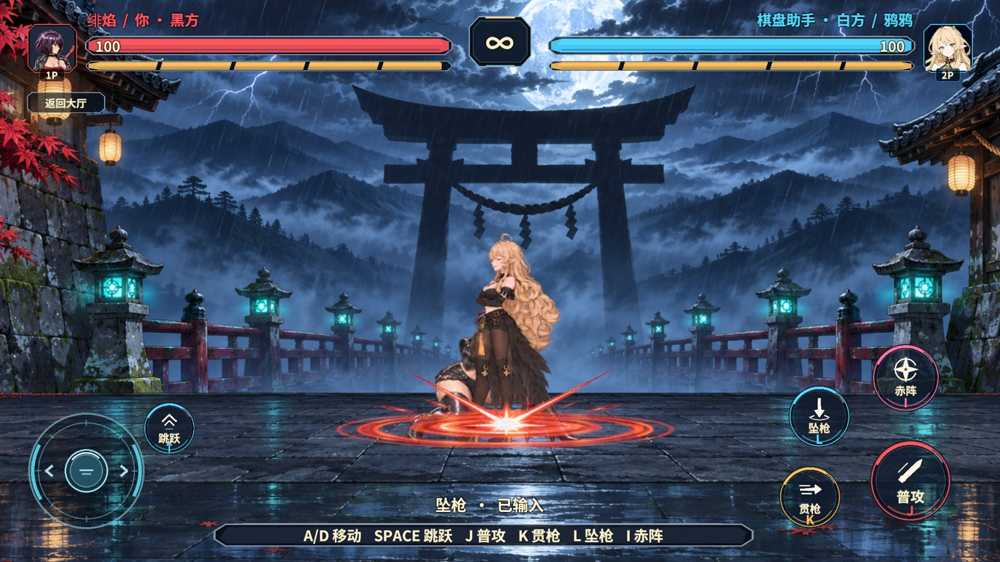
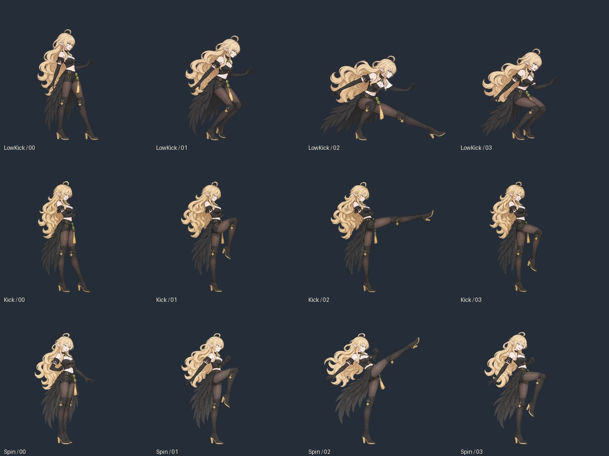
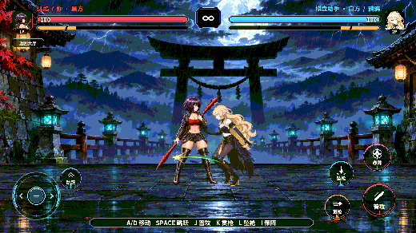

绯焰长枪与双席跳跃
视频约 00:33 可见红枪从一个身位外前突，约 00:42 可见下扎落地的红线和冲击。距离按画面中的角色站位与身高换算成 RevGame 场地单位。绯焰的枪芒宽度取自各招的原生判定，坠枪的拖尾按原生命中年龄到达地面。原始参考视频
红枪的起手和命中图层共用 EmberSpearGlow 材质。Shader 读取图集中的透明轮廓，沿枪芒推进亮带。贯枪、坠枪和赤阵分别用横向亮带、下扎拖尾和宽幅冲击。镜头在技能命中时只向一个方向偏移再回中。
水平判定距离
单位为格，从出招者位置量到目标位置。表中的数值从招式启动位移完成后计算。
| 动作 | 旧版共用 | 绯焰 | 鸦鸦 |
|---|---|---|---|
| 普攻一段 | 1.02 | 1.40 | 1.02 |
| 普攻二段 | 1.12 | 1.50 | 1.12 |
| 普攻三段 | 1.24 | 1.66 | 1.24 |
| 贯枪 / 鸦袭 | 1.55 | 2.25 | 1.75 |
| 坠枪 / 掠羽 | 1.34 | 1.80 | 1.52 |
| 赤阵 / 鸦宴 | 2.38 | 3.00 | 2.50 |
鸦鸦的脚踢保持近身判定。鸦术稍加射程，鸦袭和掠羽的轨迹读取各自的新距离。双席跳跃的初速和每帧重力同时翻倍，逐帧对照原生轨迹时，最高点从 1.208 格升到 2.416 格，落地帧一致。
原生及托管验证
Windows 原生 FIFO 测试覆盖两个座位的四个主动输入槽，在距离上限命中、越界落空。固定输入也核对两席的完整跳跃轨迹、检查点恢复和帧指纹。C# 原生联调通过普攻三段、两种技能接法、回滚和双席预测。服务端 Entity 项目编译通过。Android ARMv7 和 ARM64 原生库重新构建并读回 ABI 信息。
版本 7 的开局配置追加白方距离，Unity 和服务端共享同一个生成规则与指纹。协议升级后，联机双方需使用同版规则；版本 6 的检查点仍须用版本 6 读取。
Unity 对局验证
rev_discover 发现 Editor Play、决斗 GM、HUD 指针和对局状态；rev_call editor.play 进入 Play。第一个 rev_run 在真 AB 模式进人机决斗，核对两席和已打包角色图，记录鸦鸦掠羽。通过 ui.dump 取得本局按钮 ID，用 ui.click 按下跳跃、贯枪、坠枪和赤阵，断言起落、对应招式起手、特效层可见、Shader 支持且运行错误为 0。清理回到大厅并结束 Play。

另一轮 rev_run 调用 pvp.duel-lan-hash-check：实际 UTP 邀请、就绪、推进至第 84 帧终局。第 40 帧周期对账及第 84 帧终局对账通过；双席终局指纹均为 398586716，各确认 3 条指纹，网络夹具清理通过。本次未在 Android 真机运行。
鸦鸦三段腿法
三套各四张重新绘制。正面用来对齐脸和服装，侧面用来对齐高腰、修长腿部和膝上靴口。逐帧保留两只黑靴、金色鞋跟和可见的膝口饰件，头颈顺着发力角度轻转。低扫压下重心，弹踢沿侧面快速伸腿，回旋踢打开肩髋走高位弧线。动作体态参考了用户给的格斗片段。
起手和收势取用户差分 2.png 的笑意，蓄力和接触取 23.png 的专注神情；战斗头像跟随实际使用的动画切片切换。素材目录和 Unity 中的 12 张 PNG 按字节校验一致，保留原有 Sprite GUID、400×400 画布和落地基线。接触仍由原生命中帧驱动。查看最终 ImageGen 提示词。

rev_call game.pvp.duel-atlas 校验 Windows 图集实际打包 125 张精灵、3 页。rev_discover 发现验收入口后，rev_call editor.play 启动，rev_run 用本地完整帧执行白方三段普攻和三式鸦术。每段普攻断言起手为 02 号头像、实际接触帧为 23 号头像，并核对图集切片和命中事件。六式都有特效和音效，运行错误为 0。测试返回大厅并退出 Play，临时探针已移除。
